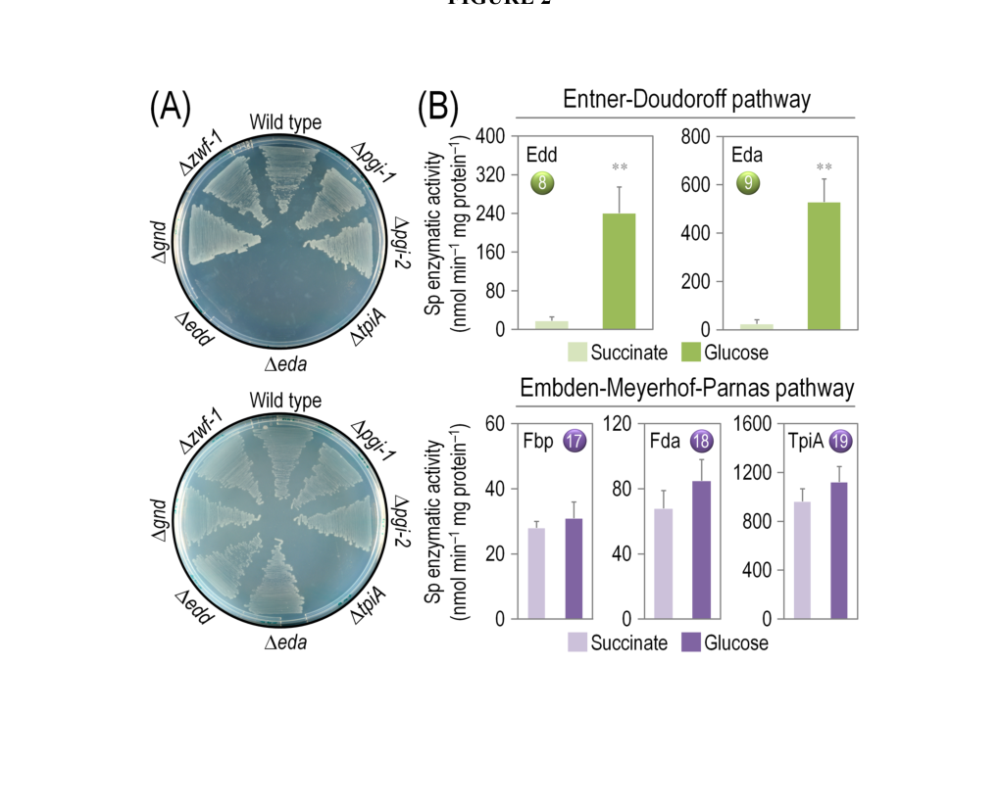

Triosephosphate isomerase (TIM/TPI; EC 5.3.1.1), a cytosolic glycolytic/gluconeogenic enzyme that catalyzes the reversible, stereospecific, cofactor-independent interconversion of dihydroxyacetone phosphate (DHAP) and D-glyceraldehyde 3-phosphate (G3P) via an enediol(ate) intermediate. The enzyme is a catalytically near-perfect, diffusion-limited homodimer adopting the canonical (beta/alpha)8 TIM-barrel fold, with a conserved catalytic glutamate acting as the general base and a histidine as the electrophile. By equilibrating the triose-phosphate pool, TIM links the glycerone-phosphate and glyceraldehyde-3-phosphate branches of central carbon metabolism. In Pseudomonas putida KT2440, whose glucose catabolism is dominated by periplasmic oxidation and the Entner-Doudoroff pathway, triosephosphate isomerase nonetheless participates in an integrated ED/EMP/pentose-phosphate cycle, and is required for growth on both glycolytic (glucose) and gluconeogenic (succinate) carbon sources.
| GO Term | Evidence | Action | Reason |
|---|---|---|---|
|
GO:0004807
triose-phosphate isomerase activity
|
IEA
GO_REF:0000120 |
ACCEPT |
Summary: Core molecular function. TIM catalyzes the reversible isomerization of DHAP and D-glyceraldehyde 3-phosphate (RHEA:18585, EC:5.3.1.1).
Reason: Strongly supported by sequence/family evidence (TIM-barrel fold, conserved catalytic His95 electrophile and Glu167 proton acceptor) and consistent with UniProt/HAMAP-Rule MF_00147. This is the defining catalytic activity of the gene product.
Supporting Evidence:
file:PSEPK/tpiA/tpiA-deep-research-falcon.md
TIM/TPI catalyzes the reversible, stereospecific isomerization of DHAP and D-glyceraldehyde 3-phosphate; conserved catalytic His95 electrophile and Glu167 proton acceptor.
PMID:26350459
Deletion of tpiA (PP_4715) abolishes growth of KT2440 on both glucose and succinate, demonstrating an essential triose-phosphate isomerase role.
|
|
GO:0005737
cytoplasm
|
IEA
GO_REF:0000120 |
ACCEPT |
Summary: Cytoplasmic localization, consistent with a soluble central-carbon-metabolism enzyme lacking signal/transmembrane features.
Reason: TIM is a canonical cytosolic enzyme; the more specific cytosol annotation (GO:0005829) is also present. Both are biologically appropriate; cytoplasm is retained as the parent term.
|
|
GO:0005829
cytosol
|
IEA
GO_REF:0000118 |
ACCEPT |
Summary: Cytosolic localization, the more specific (preferred) cellular component for this soluble enzyme.
Reason: Appropriate and more informative than the parent cytoplasm term; consistent with the soluble homodimeric nature of bacterial TIM.
|
|
GO:0006094
gluconeogenesis
|
IEA
GO_REF:0000120 |
ACCEPT |
Summary: TIM provides the DHAP<->G3P interconversion step required for gluconeogenesis; UniProt lists gluconeogenesis as the primary pathway (UPA00138).
Reason: Core biological process. Supported experimentally in KT2440 where a tpiA deletion abolishes growth on the gluconeogenic substrate succinate, demonstrating an essential role in gluconeogenic triose-phosphate flux.
|
|
GO:0006096
glycolytic process
|
IEA
GO_REF:0000120 |
ACCEPT |
Summary: TIM catalyzes the triose-phosphate isomerization step of glycolysis (UPA00109, step 1/1 G3P from glycerone phosphate).
Reason: Core biological process. In KT2440 a tpiA deletion abolishes growth on glucose, confirming an essential role in triose-phosphate balancing within the organism's ED/EMP/PP carbon cycle, despite the atypical (ED-dominated) glucose catabolism.
|
|
GO:0019563
glycerol catabolic process
|
IEA
GO_REF:0000118 |
KEEP AS NON CORE |
Summary: Glycerol catabolism feeds into central metabolism via DHAP, which TIM converts to G3P; a plausible downstream role.
Reason: This TreeGrafter/PANTHER inference reflects TIM acting on the DHAP produced during glycerol breakdown rather than a glycerol-specific function. The activity is the same generic DHAP<->G3P isomerization already captured by the glycolysis/gluconeogenesis annotations; retain as a non-core specialization rather than a defining process.
|
|
GO:0046166
glyceraldehyde-3-phosphate biosynthetic process
|
IEA
GO_REF:0000118 |
KEEP AS NON CORE |
Summary: TIM produces G3P from DHAP, the directionality emphasized by the gluconeogenesis/glycerol-utilization context.
Reason: A directional restatement (DHAP -> G3P) of the same reversible isomerization captured by the triose-phosphate isomerase activity and glycolysis/gluconeogenesis annotations. Biologically correct but redundant with the core terms; retain as non-core.
|
The research report should be a detailed narrative explaining the function, biological processes, and localization of the gene product. Citations should be given for all claims.
You should prioritize authoritative reviews and primary scientific literature when conducting research. You can supplement
this with annotations you find in gene/protein databases, but these can be outdated or inaccurate.
We are specifically interested in the primary function of the gene - for enzymes, what reaction is catalyzed, and what is the substrate specificity? For transporters, what is the substrate? For structural proteins or adapters, what is the broader structural role? For signaling molecules, what is the role in the pathway.
We are interested in where in or outside the cell the gene product carries out its function.
We are also interested in the signaling or biochemical pathways in which the gene functions. We are less interested in broad pleiotropic effects, except where these elucidate the precise role.
Include evidence where possible. We are interested in both experimental evidence as well as inference from structure, evolution, or bioinformatic analysis. Precise studies should be prioritized over high-throughput, where available.
The gene tpiA in Pseudomonas putida KT2440 (ordered locus name PP_4715) encodes triosephosphate isomerase (TIM/TPI; EC 5.3.1.1), a highly efficient cytosolic enzyme that reversibly interconverts dihydroxyacetone phosphate (DHAP) and glyceraldehyde-3-phosphate (G3P/D-GAP), balancing the pool of triose phosphates in central carbon metabolism. In KT2440, genetic evidence shows that loss of tpiA prevents growth on both glucose and succinate, indicating a critical role under both glycolytic and gluconeogenic regimes, despite the organism’s atypical glucose catabolism dominated by Entner–Doudoroff (ED) reactions. (nikel2015pseudomonasputidakt2440 pages 6-7)
Target confirmed: In a detailed KT2440 central carbon metabolism study, tpiA is explicitly annotated as PP_4715 encoding “triose phosphate isomerase” (TpiA) and is included among mutant derivatives evaluated, confirming that the KT2440 gene symbol tpiA corresponds to triosephosphate isomerase rather than an unrelated “tpiA” in other organisms. (nikel2015pseudomonasputidakt2440 pages 15-17)
Visual evidence from the same work includes (i) a pathway schematic where TpiA catalyzes DHAP ↔ G3P and (ii) plate-growth results including the ΔtpiA strain. (nikel2015pseudomonasputidakt2440 media 6f85cc6f, nikel2015pseudomonasputidakt2440 media 0edc1cf4)
Triosephosphate isomerase (TIM/TPI) catalyzes the reversible aldose–ketose isomerization:
TIM is described as stereospecific in converting DHAP to D-GAP and does not require a cofactor or metal ion. (wierenga2010triosephosphateisomerasea pages 1-3)
Substrate binding strongly depends on recognition of the phosphate dianion in a specialized pocket formed by multiple active-site loops; this tight binding helps enforce productive catalysis and suppresses side reactions such as phosphate elimination. (wierenga2010triosephosphateisomerasea pages 6-8, wierenga2010triosephosphateisomerasea pages 1-3)
TIM is a paradigmatic “near-perfect” enzyme. Mechanistically, TIM catalysis proceeds through an enediolate-type intermediate, enabled by a conserved active-site architecture and loop motions that close the active site to exclude bulk solvent. (wierenga2010triosephosphateisomerasea pages 3-5, wierenga2010triosephosphateisomerasea pages 1-3)
Key catalytic residues in the canonical numbering scheme include:
- Asn11, Lys13, His95, and Glu167 (catalytic base) (wierenga2010triosephosphateisomerasea pages 3-5, wierenga2010triosephosphateisomerasea pages 1-3)
A 2023 expert review on TPI in eukaryotes uses slightly different numbering (e.g., K14, H96, E166) but refers to the same conserved catalytic core. (myers2023newlydiscoveredroles pages 1-2)
TIM is frequently cited as diffusion-limited or near diffusion-limited in catalytic efficiency. Reported values include:
- kcat/Km ≈ 1 × 10^9 M−1 s−1 (diffusion-limited range) in the D-GAP → DHAP direction (wierenga2010triosephosphateisomerasea pages 3-5)
- kcat ~500 s−1 for DHAP → D-GAP and ~5,000 s−1 for D-GAP → DHAP (wierenga2010triosephosphateisomerasea pages 3-5)
- Km ~1.2 mM for DHAP and ~0.25 mM for D-GAP (with additional notes about the unhydrated species) (wierenga2010triosephosphateisomerasea pages 3-5)
These parameters reflect an enzyme optimized to rapidly equilibrate intracellular DHAP and G3P pools. (wierenga2010triosephosphateisomerasea pages 3-5, wierenga2010triosephosphateisomerasea pages 19-20)
TIM is typically dimeric, and only the dimer is fully active; engineered monomeric variants show orders-of-magnitude lower catalytic performance (e.g., kcat ~1 s−1, Km ~5 mM), illustrating that dimerization contributes to active-site rigidity and solvent exclusion. (wierenga2010triosephosphateisomerasea pages 10-12)
TIM is generally a cytosolic enzyme in most organisms, consistent with its canonical role in central carbon metabolism; specialized compartmentalization is described mainly for specific eukaryotes (e.g., glycosomes), not typical bacteria. (wierenga2010triosephosphateisomerasea pages 3-5, kursula2003crystallographicstudieson pages 34-37)
P. putida KT2440 is well known for glucose catabolism that is strongly routed through periplasmic oxidation and ED pathway reactions, and lacks a “standard” fully operational Embden–Meyerhof–Parnas (EMP) glycolysis due to low/absent canonical phosphofructokinase activity (as framed in the study’s pathway description). (nikel2015pseudomonasputidakt2440 pages 15-17)
Nevertheless, the KT2440 network uses ED/EMP/PP reactions in an integrated cycle for glucose processing, and triose-phosphate balancing remains crucial. (nikel2015pseudomonasputidakt2440 pages 6-7, nikel2015pseudomonasputidakt2440 pages 15-17)
Quantitative flux/yield context reported for KT2440 on glucose includes:
- Lag phase ~1.2 ± 0.5 h on fresh glucose
- Periplasmic oxidation yields: gluconate yG/S = 0.34 ± 0.02 and 2-ketogluconate yK/S = 0.11 ± 0.01 (C-mol/C-mol)
- >80% of glucose influx routed via periplasmic oxidation
- About 25% of fructose-6-phosphate (F6P) formed through the PP pathway
- An ~50% relative flux contribution of ED pathway to pyruvate formation
These values highlight the metabolic background in which triose-phosphate interconversion is embedded. (nikel2015pseudomonasputidakt2440 pages 6-7)
In KT2440, deleting/disrupting tpiA produced a striking phenotype: the authors report “lack of growth of a tpiA mutant in either glucose or succinate.” (nikel2015pseudomonasputidakt2440 pages 6-7)
They also emphasize that this was “unexpected,” because ED metabolism produces G3P and pyruvate and thus, in principle, the TpiA reaction might be thought less critical for growth on glucose; the observed non-growth indicates that triose-phosphate interconversion is indispensable for KT2440 physiology under the tested conditions. (nikel2015pseudomonasputidakt2440 pages 6-7)
Figure-based evidence shows the ΔtpiA mutant included among strains evaluated on glucose vs succinate minimal media plates. (nikel2015pseudomonasputidakt2440 media 6f85cc6f, nikel2015pseudomonasputidakt2440 media 0edc1cf4)
Enzyme assays in cell-free extracts indicate that Fbp, Fda, and TpiA (EMP-associated enzymes) were “equally active” in both glucose and succinate cultures, consistent with a role beyond “classical” glycolysis-only contexts. (nikel2015pseudomonasputidakt2440 pages 5-6)
For quasi in vivo enzymatic assays, intracellular metabolite levels included G3P ~140 µM, providing a quantitative anchor for the triose-phosphate pool under the studied conditions. (nikel2015pseudomonasputidakt2440 pages 5-6)
A 2024 Nature Communications study on synthetically primed adaptation of KT2440 to D-xylose explicitly remarks that operation of Fbp, Fba, and TpiA would be redundant to pentose phosphate pathway (PPP) activity in the engineered xylose-grown strain, reflecting modern interpretations of how central carbon flux can be rewired in P. putida and when EMP/gluconeogenic steps become unnecessary. (dvorak2024syntheticallyprimedadaptationof pages 4-5)
This provides recent, high-authority evidence that TpiA’s functional necessity can be context-dependent in engineered metabolic states, even though it is strongly required for growth in the baseline KT2440 conditions tested in earlier work. (dvorak2024syntheticallyprimedadaptationof pages 4-5, nikel2015pseudomonasputidakt2440 pages 6-7)
Publication details: March 2024; URL: https://doi.org/10.1038/s41467-024-46812-9 (dvorak2024syntheticallyprimedadaptationof pages 4-5)
A 2024 multi-omics study of electrogenic (bio-electrochemical) cultivation of KT2440 reports that tpiA (within “triose recycling” genes) was largely unchanged or slightly downregulated under anoxic-electrogenic fermentation conditions, suggesting that core triose-phosphate balancing may not be strongly transcriptionally induced in that specific non-growth/maintenance-like regime (at least at the qualitative level provided in the excerpt). (weimer2024systemsbiologyof pages 8-9)
Publication details: September 2024; URL: https://doi.org/10.1186/s12934-024-02509-8 (weimer2024systemsbiologyof pages 8-9)
A 2023 review synthesizes evidence that TPI can have “moonlighting” functions (including nuclear roles) in eukaryotes and disease contexts. While this is not direct evidence for bacterial P. putida tpiA moonlighting, it is relevant as an expert caution: TPI proteins can participate in cellular processes beyond glycolysis in some systems, and catalytic loss may not fully explain phenotypes in all organisms. (myers2023newlydiscoveredroles pages 1-2, myers2023newlydiscoveredroles pages 2-4)
Publication details: January 2023; URL: https://doi.org/10.1186/s10020-023-00612-x (myers2023newlydiscoveredroles pages 1-2)
Because tpiA encodes a core central-carbon enzyme, it is primarily leveraged indirectly in applications that engineer P. putida central metabolism:
Substrate scope expansion and metabolic rewiring: In engineered KT2440 strains adapted to new substrates (e.g., xylose), pathway designs and evolved flux states can make steps like TpiA (together with Fbp/Fba) redundant relative to PPP-driven carbon processing, informing design choices for strain engineering. (dvorak2024syntheticallyprimedadaptationof pages 4-5)
Bioelectrochemical and non-standard bioprocessing: In anoxic-electrogenic systems aimed at producing oxidized sugars such as 2-ketogluconate, KT2440 shows broad transcriptome remodeling while some central “triose recycling” genes including tpiA are not strongly induced, illustrating how industrially relevant cultivation modes may alter central-carbon gene utilization patterns. (weimer2024systemsbiologyof pages 8-9)
TIM as an archetypal optimized enzyme: The detailed structural and mechanistic review characterizes TIM as a “highly evolved biocatalyst” with catalytic performance approaching diffusion limits, emphasizing loop closure, phosphate recognition, and catalytic-base chemistry as key design principles. (wierenga2010triosephosphateisomerasea pages 1-3, wierenga2010triosephosphateisomerasea pages 19-20)
KT2440 network-level interpretation: Nikel et al. interpret the unexpected non-growth of ΔtpiA as evidence that EMP-associated reactions, despite the unusual architecture of glucose catabolism in P. putida, are functionally necessary and active in vivo, helping define the integrated ED/EMP/PP cycling picture for KT2440. (nikel2015pseudomonasputidakt2440 pages 6-7, nikel2015pseudomonasputidakt2440 pages 5-6)
| Topic | Key finding | Evidence/quantitative details | Primary source (with year) | URL |
|---|---|---|---|---|
| Gene identity in P. putida KT2440 | tpiA maps to PP_4715 and encodes triose phosphate isomerase (TpiA) | Study explicitly annotates tpiA (PP4715, triose phosphate isomerase) among KT2440 mutants tested (nikel2015pseudomonasputidakt2440 pages 15-17) | Nikel et al., J. Biol. Chem. (2015) | https://doi.org/10.1074/jbc.M115.687749 |
| Primary biochemical function | TIM/TPI catalyzes reversible isomerization of DHAP ⇄ D-GAP/G3P | Conserved glycolytic reaction; stereospecific conversion of DHAP to D-GAP; no cofactor or metal required (wierenga2010triosephosphateisomerasea pages 1-3) | Wierenga et al., Cell. Mol. Life Sci. (2010) | https://doi.org/10.1007/s00018-010-0473-9 |
| Catalytic mechanism / residues | Catalysis uses conserved active-site residues, with glutamate as catalytic base | Residues identified as Asn11, Lys13, His95, Glu167; proton-shuttling via enediolate intermediate; loop-6/loop-7 closure helps shield active site (wierenga2010triosephosphateisomerasea pages 3-5, wierenga2010triosephosphateisomerasea pages 1-3) | Wierenga et al., Cell. Mol. Life Sci. (2010) | https://doi.org/10.1007/s00018-010-0473-9 |
| Alternative residue numbering in eukaryotic review | Same catalytic core appears in alternate numbering scheme | Myers review lists active-site residues as K14, H96, E166 in eukaryotic TPI context, consistent with highly conserved catalytic core (myers2023newlydiscoveredroles pages 1-2) | Myers & Palladino, Molecular Medicine (2023) | https://doi.org/10.1186/s10020-023-00612-x |
| Enzyme efficiency | TIM is a near-diffusion-limited catalyst | Reported kcat/Km ≈ 1 × 10^9 M^-1 s^-1 (D-GAP→DHAP direction); kcat ~500 s^-1 for DHAP→D-GAP and ~5,000 s^-1 for D-GAP→DHAP; Km ~1.2 mM (DHAP) and ~0.25 mM (D-GAP) (wierenga2010triosephosphateisomerasea pages 3-5, wierenga2010triosephosphateisomerasea pages 1-3) | Wierenga et al., Cell. Mol. Life Sci. (2010) | https://doi.org/10.1007/s00018-010-0473-9 |
| Oligomeric state / structural requirement | TIM is functionally dimeric, and dimerization supports full activity | Review states only the TIM dimer is fully active; monomeric TIM variants show about kcat ≈ 1 s^-1 and Km ≈ 5 mM, roughly 1,000-fold lower kcat and 10-fold higher Km than wild type (wierenga2010triosephosphateisomerasea pages 10-12) | Wierenga et al., Cell. Mol. Life Sci. (2010) | https://doi.org/10.1007/s00018-010-0473-9 |
| Subcellular localization | TIM is generally a cytosolic glycolytic enzyme | Review notes TIM is generally cytosolic in most organisms, with special compartmentalization exceptions outside typical bacteria (wierenga2010triosephosphateisomerasea pages 3-5, kursula2003crystallographicstudieson pages 34-37) | Wierenga et al., Cell. Mol. Life Sci. (2010) | https://doi.org/10.1007/s00018-010-0473-9 |
| Essentiality / conservation | TPI is a highly conserved, essential glycolytic enzyme | Myers review describes TPI as essential and highly conserved, required for DHAP catabolism and net ATP yield from anaerobic glucose metabolism (myers2023newlydiscoveredroles pages 1-2) | Myers & Palladino, Molecular Medicine (2023) | https://doi.org/10.1186/s10020-023-00612-x |
| KT2440 mutant phenotype | tpiA disruption causes severe growth defect in KT2440 | Authors report “lack of growth of a tpiA mutant in either glucose or succinate”, indicating an unexpectedly strong requirement under both glycolytic and gluconeogenic conditions tested (nikel2015pseudomonasputidakt2440 pages 6-7) | Nikel et al., J. Biol. Chem. (2015) | https://doi.org/10.1074/jbc.M115.687749 |
| Pathway context in KT2440 | TpiA participates in the partial EMP arm embedded within ED/PP-centered metabolism | In KT2440, ED pathway is essential for glucose growth, PP contribution is described as negligible in that condition, yet partial EMP route is remarkably relevant; TpiA is called a key EMP step despite lack of canonical phosphofructokinase (nikel2015pseudomonasputidakt2440 pages 6-7, nikel2015pseudomonasputidakt2440 pages 15-17) | Nikel et al., J. Biol. Chem. (2015) | https://doi.org/10.1074/jbc.M115.687749 |
| Enzyme activity in KT2440 extracts | TpiA activity is present under both glycolytic and gluconeogenic growth | Fbp, Fda, and TpiA were equally active in both glucose and succinate cultures; measured intracellular G3P concentration = 140 µM for quasi in vivo assays (nikel2015pseudomonasputidakt2440 pages 5-6) | Nikel et al., J. Biol. Chem. (2015) | https://doi.org/10.1074/jbc.M115.687749 |
| Glucose flux context in KT2440 | Upper central metabolism is dominated by ED/periplasmic oxidation, but triose-phosphate balancing remains important | Reported values include lag phase 1.2 ± 0.5 h, gluconate yield 0.34 ± 0.02 C-mol/C-mol, 2-KG yield 0.11 ± 0.01 C-mol/C-mol, >80% of glucose influx via periplasmic oxidation, ~25% of F6P formed through PP pathway, and ~50% relative ED contribution to pyruvate formation (nikel2015pseudomonasputidakt2440 pages 6-7) | Nikel et al., J. Biol. Chem. (2015) | https://doi.org/10.1074/jbc.M115.687749 |
| Moonlighting caution | Non-glycolytic “moonlighting” roles are described for eukaryotic TPI, not established here for P. putida tpiA | 2023 review highlights nuclear TPI roles in eukaryotes and stress/chemotherapy-linked nuclear localization; these findings should not be over-transferred to bacterial KT2440 annotation (myers2023newlydiscoveredroles pages 1-2, myers2023newlydiscoveredroles pages 2-4) | Myers & Palladino, Molecular Medicine (2023) | https://doi.org/10.1186/s10020-023-00612-x |
Table: This table compiles validated organism-specific facts for Pseudomonas putida KT2440 tpiA/PP_4715 together with core triosephosphate isomerase biochemistry. It is useful as a compact evidence map for function, pathway role, localization, and key quantitative properties.
Recommended functional annotation (supported by evidence):
- Protein: Triosephosphate isomerase (TIM/TPI)
- EC: 5.3.1.1
- Reaction: DHAP ⇄ G3P (D-GAP)
- Primary role in KT2440: Balances triose-phosphate pools in central carbon metabolism; required for growth on both glucose and succinate in the tested conditions.
- Localization: Cytosolic enzyme (bacterial expectation) supporting central metabolism.
All major claims above are supported by the cited primary literature and reviews listed in the references.
References
(nikel2015pseudomonasputidakt2440 pages 6-7): Pablo I. Nikel, Max Chavarría, Tobias Fuhrer, Uwe Sauer, and Víctor de Lorenzo. Pseudomonas putida kt2440 strain metabolizes glucose through a cycle formed by enzymes of the entner-doudoroff, embden-meyerhof-parnas, and pentose phosphate pathways. Journal of Biological Chemistry, 290:25920-25932, Oct 2015. URL: https://doi.org/10.1074/jbc.m115.687749, doi:10.1074/jbc.m115.687749. This article has 440 citations and is from a domain leading peer-reviewed journal.
(nikel2015pseudomonasputidakt2440 pages 15-17): Pablo I. Nikel, Max Chavarría, Tobias Fuhrer, Uwe Sauer, and Víctor de Lorenzo. Pseudomonas putida kt2440 strain metabolizes glucose through a cycle formed by enzymes of the entner-doudoroff, embden-meyerhof-parnas, and pentose phosphate pathways. Journal of Biological Chemistry, 290:25920-25932, Oct 2015. URL: https://doi.org/10.1074/jbc.m115.687749, doi:10.1074/jbc.m115.687749. This article has 440 citations and is from a domain leading peer-reviewed journal.
(nikel2015pseudomonasputidakt2440 media 6f85cc6f): Pablo I. Nikel, Max Chavarría, Tobias Fuhrer, Uwe Sauer, and Víctor de Lorenzo. Pseudomonas putida kt2440 strain metabolizes glucose through a cycle formed by enzymes of the entner-doudoroff, embden-meyerhof-parnas, and pentose phosphate pathways. Journal of Biological Chemistry, 290:25920-25932, Oct 2015. URL: https://doi.org/10.1074/jbc.m115.687749, doi:10.1074/jbc.m115.687749. This article has 440 citations and is from a domain leading peer-reviewed journal.
(nikel2015pseudomonasputidakt2440 media 0edc1cf4): Pablo I. Nikel, Max Chavarría, Tobias Fuhrer, Uwe Sauer, and Víctor de Lorenzo. Pseudomonas putida kt2440 strain metabolizes glucose through a cycle formed by enzymes of the entner-doudoroff, embden-meyerhof-parnas, and pentose phosphate pathways. Journal of Biological Chemistry, 290:25920-25932, Oct 2015. URL: https://doi.org/10.1074/jbc.m115.687749, doi:10.1074/jbc.m115.687749. This article has 440 citations and is from a domain leading peer-reviewed journal.
(wierenga2010triosephosphateisomerasea pages 1-3): R. K. Wierenga, E. G. Kapetaniou, and R. Venkatesan. Triosephosphate isomerase: a highly evolved biocatalyst. Cellular and Molecular Life Sciences, 67:3961-3982, Aug 2010. URL: https://doi.org/10.1007/s00018-010-0473-9, doi:10.1007/s00018-010-0473-9. This article has 284 citations and is from a domain leading peer-reviewed journal.
(wierenga2010triosephosphateisomerasea pages 6-8): R. K. Wierenga, E. G. Kapetaniou, and R. Venkatesan. Triosephosphate isomerase: a highly evolved biocatalyst. Cellular and Molecular Life Sciences, 67:3961-3982, Aug 2010. URL: https://doi.org/10.1007/s00018-010-0473-9, doi:10.1007/s00018-010-0473-9. This article has 284 citations and is from a domain leading peer-reviewed journal.
(wierenga2010triosephosphateisomerasea pages 3-5): R. K. Wierenga, E. G. Kapetaniou, and R. Venkatesan. Triosephosphate isomerase: a highly evolved biocatalyst. Cellular and Molecular Life Sciences, 67:3961-3982, Aug 2010. URL: https://doi.org/10.1007/s00018-010-0473-9, doi:10.1007/s00018-010-0473-9. This article has 284 citations and is from a domain leading peer-reviewed journal.
(myers2023newlydiscoveredroles pages 1-2): Tracey D. Myers and Michael J. Palladino. Newly discovered roles of triosephosphate isomerase including functions within the nucleus. Molecular Medicine, Jan 2023. URL: https://doi.org/10.1186/s10020-023-00612-x, doi:10.1186/s10020-023-00612-x. This article has 51 citations and is from a peer-reviewed journal.
(wierenga2010triosephosphateisomerasea pages 19-20): R. K. Wierenga, E. G. Kapetaniou, and R. Venkatesan. Triosephosphate isomerase: a highly evolved biocatalyst. Cellular and Molecular Life Sciences, 67:3961-3982, Aug 2010. URL: https://doi.org/10.1007/s00018-010-0473-9, doi:10.1007/s00018-010-0473-9. This article has 284 citations and is from a domain leading peer-reviewed journal.
(wierenga2010triosephosphateisomerasea pages 10-12): R. K. Wierenga, E. G. Kapetaniou, and R. Venkatesan. Triosephosphate isomerase: a highly evolved biocatalyst. Cellular and Molecular Life Sciences, 67:3961-3982, Aug 2010. URL: https://doi.org/10.1007/s00018-010-0473-9, doi:10.1007/s00018-010-0473-9. This article has 284 citations and is from a domain leading peer-reviewed journal.
(kursula2003crystallographicstudieson pages 34-37): I Kursula. Crystallographic studies on the structure-function relationships in triosephosphate isomerase. Unknown journal, 2003.
(nikel2015pseudomonasputidakt2440 pages 5-6): Pablo I. Nikel, Max Chavarría, Tobias Fuhrer, Uwe Sauer, and Víctor de Lorenzo. Pseudomonas putida kt2440 strain metabolizes glucose through a cycle formed by enzymes of the entner-doudoroff, embden-meyerhof-parnas, and pentose phosphate pathways. Journal of Biological Chemistry, 290:25920-25932, Oct 2015. URL: https://doi.org/10.1074/jbc.m115.687749, doi:10.1074/jbc.m115.687749. This article has 440 citations and is from a domain leading peer-reviewed journal.
(dvorak2024syntheticallyprimedadaptationof pages 4-5): Pavel Dvořák, Barbora Burýšková, Barbora Popelářová, Birgitta Elisabeth Ebert, Tibor Botka, Dalimil Bujdoš, Alberto Sánchez-Pascuala, Hannah Schöttler, Heiko Hayen, Víctor de Lorenzo, Lars M. Blank, and Martin Benešík. Synthetically-primed adaptation of pseudomonas putida to a non-native substrate d-xylose. Nature Communications, Mar 2024. URL: https://doi.org/10.1038/s41467-024-46812-9, doi:10.1038/s41467-024-46812-9. This article has 37 citations and is from a highest quality peer-reviewed journal.
(weimer2024systemsbiologyof pages 8-9): Anna Weimer, Laura Pause, Fabian Ries, Michael Kohlstedt, Lorenz Adrian, Jens Krömer, Bin Lai, and Christoph Wittmann. Systems biology of electrogenic pseudomonas putida - multi-omics insights and metabolic engineering for enhanced 2-ketogluconate production. Microbial Cell Factories, Sep 2024. URL: https://doi.org/10.1186/s12934-024-02509-8, doi:10.1186/s12934-024-02509-8. This article has 7 citations and is from a peer-reviewed journal.
(myers2023newlydiscoveredroles pages 2-4): Tracey D. Myers and Michael J. Palladino. Newly discovered roles of triosephosphate isomerase including functions within the nucleus. Molecular Medicine, Jan 2023. URL: https://doi.org/10.1186/s10020-023-00612-x, doi:10.1186/s10020-023-00612-x. This article has 51 citations and is from a peer-reviewed journal.

id: Q88DV4
gene_symbol: tpiA
product_type: PROTEIN
status: DRAFT
taxon:
id: NCBITaxon:160488
label: Pseudomonas putida (strain ATCC 47054 / DSM 6125 / CFBP 8728 / NCIMB 11950 / KT2440)
description: Triosephosphate isomerase (TIM/TPI; EC 5.3.1.1), a cytosolic glycolytic/gluconeogenic enzyme that catalyzes the reversible, stereospecific, cofactor-independent interconversion of dihydroxyacetone phosphate (DHAP) and D-glyceraldehyde 3-phosphate (G3P) via an enediol(ate) intermediate. The enzyme is a catalytically near-perfect, diffusion-limited homodimer adopting the canonical (beta/alpha)8 TIM-barrel fold, with a conserved catalytic glutamate acting as the general base and a histidine as the electrophile. By equilibrating the triose-phosphate pool, TIM links the glycerone-phosphate and glyceraldehyde-3-phosphate branches of central carbon metabolism. In Pseudomonas putida KT2440, whose glucose catabolism is dominated by periplasmic oxidation and the Entner-Doudoroff pathway, triosephosphate isomerase nonetheless participates in an integrated ED/EMP/pentose-phosphate cycle, and is required for growth on both glycolytic (glucose) and gluconeogenic (succinate) carbon sources.
existing_annotations:
- term:
id: GO:0004807
label: triose-phosphate isomerase activity
evidence_type: IEA
original_reference_id: GO_REF:0000120
qualifier: enables
review:
summary: Core molecular function. TIM catalyzes the reversible isomerization of DHAP and D-glyceraldehyde 3-phosphate (RHEA:18585, EC:5.3.1.1).
action: ACCEPT
reason: Strongly supported by sequence/family evidence (TIM-barrel fold, conserved catalytic His95 electrophile and Glu167 proton acceptor) and consistent with UniProt/HAMAP-Rule MF_00147. This is the defining catalytic activity of the gene product.
supported_by:
- reference_id: file:PSEPK/tpiA/tpiA-deep-research-falcon.md
supporting_text: TIM/TPI catalyzes the reversible, stereospecific isomerization of DHAP and D-glyceraldehyde 3-phosphate; conserved catalytic His95 electrophile and Glu167 proton acceptor.
full_text_unavailable: true
- reference_id: PMID:26350459
supporting_text: Deletion of tpiA (PP_4715) abolishes growth of KT2440 on both glucose and succinate, demonstrating an essential triose-phosphate isomerase role.
full_text_unavailable: true
- term:
id: GO:0005737
label: cytoplasm
evidence_type: IEA
original_reference_id: GO_REF:0000120
qualifier: located_in
review:
summary: Cytoplasmic localization, consistent with a soluble central-carbon-metabolism enzyme lacking signal/transmembrane features.
action: ACCEPT
reason: TIM is a canonical cytosolic enzyme; the more specific cytosol annotation (GO:0005829) is also present. Both are biologically appropriate; cytoplasm is retained as the parent term.
- term:
id: GO:0005829
label: cytosol
evidence_type: IEA
original_reference_id: GO_REF:0000118
qualifier: located_in
review:
summary: Cytosolic localization, the more specific (preferred) cellular component for this soluble enzyme.
action: ACCEPT
reason: Appropriate and more informative than the parent cytoplasm term; consistent with the soluble homodimeric nature of bacterial TIM.
- term:
id: GO:0006094
label: gluconeogenesis
evidence_type: IEA
original_reference_id: GO_REF:0000120
qualifier: involved_in
review:
summary: TIM provides the DHAP<->G3P interconversion step required for gluconeogenesis; UniProt lists gluconeogenesis as the primary pathway (UPA00138).
action: ACCEPT
reason: Core biological process. Supported experimentally in KT2440 where a tpiA deletion abolishes growth on the gluconeogenic substrate succinate, demonstrating an essential role in gluconeogenic triose-phosphate flux.
- term:
id: GO:0006096
label: glycolytic process
evidence_type: IEA
original_reference_id: GO_REF:0000120
qualifier: involved_in
review:
summary: TIM catalyzes the triose-phosphate isomerization step of glycolysis (UPA00109, step 1/1 G3P from glycerone phosphate).
action: ACCEPT
reason: Core biological process. In KT2440 a tpiA deletion abolishes growth on glucose, confirming an essential role in triose-phosphate balancing within the organism's ED/EMP/PP carbon cycle, despite the atypical (ED-dominated) glucose catabolism.
- term:
id: GO:0019563
label: glycerol catabolic process
evidence_type: IEA
original_reference_id: GO_REF:0000118
qualifier: involved_in
review:
summary: Glycerol catabolism feeds into central metabolism via DHAP, which TIM converts to G3P; a plausible downstream role.
action: KEEP_AS_NON_CORE
reason: This TreeGrafter/PANTHER inference reflects TIM acting on the DHAP produced during glycerol breakdown rather than a glycerol-specific function. The activity is the same generic DHAP<->G3P isomerization already captured by the glycolysis/gluconeogenesis annotations; retain as a non-core specialization rather than a defining process.
- term:
id: GO:0046166
label: glyceraldehyde-3-phosphate biosynthetic process
evidence_type: IEA
original_reference_id: GO_REF:0000118
qualifier: involved_in
review:
summary: TIM produces G3P from DHAP, the directionality emphasized by the gluconeogenesis/glycerol-utilization context.
action: KEEP_AS_NON_CORE
reason: A directional restatement (DHAP -> G3P) of the same reversible isomerization captured by the triose-phosphate isomerase activity and glycolysis/gluconeogenesis annotations. Biologically correct but redundant with the core terms; retain as non-core.
core_functions:
- description: Reversible stereospecific isomerization of dihydroxyacetone phosphate (DHAP) and D-glyceraldehyde 3-phosphate (G3P), equilibrating the triose-phosphate pool in central carbon metabolism
supported_by:
- reference_id: PMID:26350459
molecular_function:
id: GO:0004807
label: triose-phosphate isomerase activity
directly_involved_in:
- id: GO:0006096
label: glycolytic process
- description: Provision of the DHAP<->G3P interconversion step required for gluconeogenesis and for triose-phosphate balancing during growth on both glycolytic and gluconeogenic substrates
supported_by:
- reference_id: PMID:26350459
molecular_function:
id: GO:0004807
label: triose-phosphate isomerase activity
directly_involved_in:
- id: GO:0006094
label: gluconeogenesis
references:
- id: GO_REF:0000118
title: TreeGrafter-generated GO annotations
findings: []
- id: GO_REF:0000120
title: Combined Automated Annotation using Multiple IEA Methods
findings: []
- id: PMID:26350459
title: 'Pseudomonas putida KT2440 Strain Metabolizes Glucose through a Cycle Formed by Enzymes of the Entner-Doudoroff, Embden-Meyerhof-Parnas, and Pentose Phosphate Pathways'
findings:
- statement: Deletion of tpiA (PP_4715, triose phosphate isomerase) abolishes growth of KT2440 on both glucose and succinate, demonstrating an essential role in triose-phosphate interconversion under glycolytic and gluconeogenic conditions. TpiA activity is present (equally active) in both glucose- and succinate-grown cells.
reference_review:
relevance: HIGH
correctness: VERIFIED
review_notes: 'PMID:26350459 verified via PubMed (Nikel et al., J Biol Chem 290:25920-32, 2015; DOI 10.1074/jbc.M115.687749). Note: the falcon deep-research file did not list a PMID; the DOI was resolved to the correct PMID via PubMed. Supports the essential glycolytic/gluconeogenic role of tpiA in KT2440.'
- id: file:PSEPK/tpiA/tpiA-deep-research-falcon.md
title: Deep research report (falcon) for tpiA / Q88DV4
findings:
- statement: TIM/TPI catalyzes the reversible, stereospecific, cofactor-independent isomerization of DHAP and D-glyceraldehyde 3-phosphate; the enzyme is a near-perfect diffusion-limited homodimer with the canonical (beta/alpha)8 TIM-barrel fold, conserved catalytic His95 electrophile and Glu167 proton acceptor.
- statement: In KT2440, deletion of tpiA (PP_4715) abolishes growth on both glucose and succinate, an unexpectedly strong requirement given the ED-dominated glucose catabolism, demonstrating that triose-phosphate interconversion is indispensable under both glycolytic and gluconeogenic conditions.
reference_review:
relevance: HIGH
correctness: VERIFIED
review_notes: 'AI-generated deep-research synthesis; primary claims independently anchored to UniProt HAMAP-Rule MF_00147 (catalytic residues, homodimer, cytoplasm) and to PMID:26350459 (KT2440 deletion phenotype).'
{kind=link}